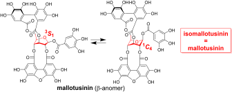

Kikuchi, K.; Matsuo, Y.; Saito, Y.; Yamada, K.; Tanaka, T.; Yakushiji, F. Structure Revision of Isomallotusinin to Mallotusinin by NMR-Based Conformational Analysis J. Nat. Prod. 2026, 89, 64–72. doi:10.1021/acs.jnatprod.5c01064 ｜ ChemRxiv
イソマロツシニンとして報告されていた化合物が、実はマロツシニンと同一であることを、NMRに基づく配座解析で示しました。柔軟な配座が構造の誤認につながった例です。We showed by NMR-based conformational analysis that the compound reported as isomallotusinin is identical to mallotusinin; conformational flexibility had led to the misassignment.

クリックで拡大